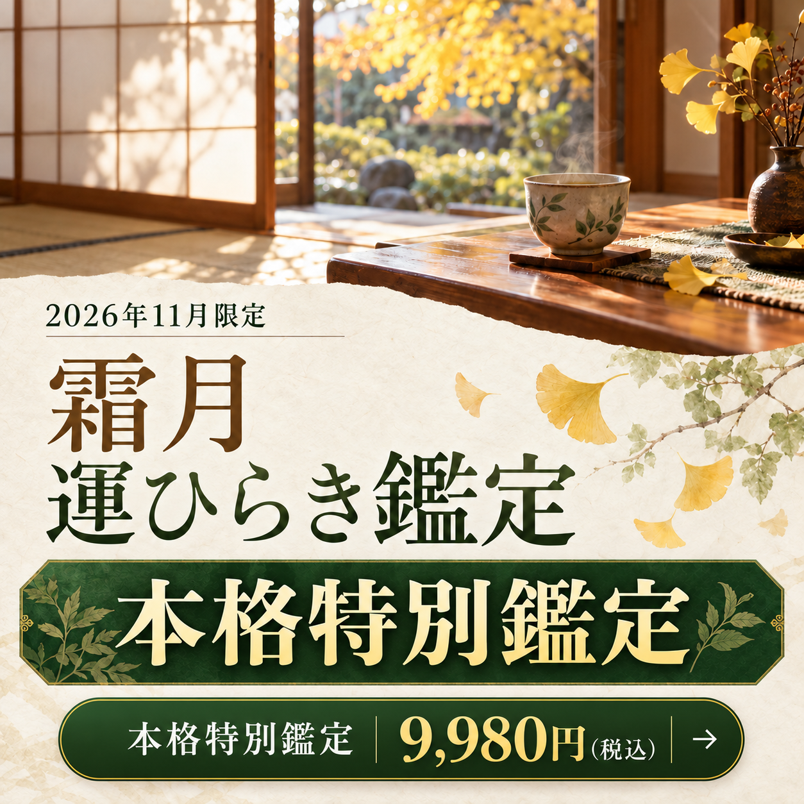

このページは有料の本鑑定のご案内です。
あの鑑定を読んでいる時、どこかで手が止まりませんでしたか。
胸のあたりが、ざわっとした。
「あ、それだ」と思った。
少し怖いけれど、本当はわかっていた気がした。
そして今が11月だということにも、意味があります。
木々が葉を落とすのは、枯れたからじゃないんよ。
次の春に向けて、要らないものを手放しているだけなんよ。
人も同じなんよ。
11月は、一年かけて育ててきたものが実り、抱えすぎたものが自然に落ちていく時期。
手が止まった場所は、
あんたの人生がずっと
詰まっていた場所。
11月は、その詰まりが
いちばんゆるむ季節なんよ。
「少し怖いけど、わかる」と思った場所。
そこはもう、変わる準備ができています。
未来を言い当てて、すごいでしょと言いたいわけじゃない。
怖いことを言って、言う通りにさせたいわけでもない。
私が届けたいのは、今の流れをほどくための言葉なんよ。
「私の努力が足りないから」
「私に価値がないから」
「私だけ、見放されたんだ」
届いているサインに、気づけなくなっているだけなんよ。
そして11月は、そのサインがいちばん濃く降りてくる時期なんよ。
無料鑑定でお伝えしたのは、今あんたに何が起きているか。それだけなんよ。
それでも、心が軽くなった方は多い。
でも、ひとつだけ。
「軽くなったのに、なぜかまた戻る」
そう感じたこと、ありませんか。
逆に、無料鑑定がピンと来なかった方。それも同じなんよ。
表層しか視ていないので、まだ本当の場所に届いていないだけなんよ。
「自分が何をしたいのか分からない」——そう書かれる方も、本当に多いなんよ。
それも、詰まりのしわざなんよ。
当たっていた。
胸が軽くなった。
少し、泣きそうになった。
そこで終わると、数日後、また同じ日常に戻ります。
人生が詰まっていた根本のパターンは、気づいただけでは変わりきらないからなんよ。
無料鑑定は、
扉の前に立つためのもの。
霜月 運ひらき鑑定は、その扉を開けて、
年内に人生を動かすためのものなんよ。
毎年、年末が近づくとこう思いませんか。
「今年も、何も変わらなかった」
そして年が明けて、また同じことを考える。
その繰り返しに、心当たりがある方は多いはずなんよ。
手放せなかった人間関係。
踏み出せなかった仕事。
言えなかった言葉。
それを抱えたまま年を越すと、来年も同じ重さで始まります。
11月のうちに視ておく意味は、そこなんよ。
年内に整理できるものと、来年へ渡すもの。
その線引きができるのが、この季節なんよ。
「またお金を使って、何も変わらなかったらどうしよう」
その気持ち、自然なんよ。
お金を払ってまで見てもらうのは、少し怖いですよね。
それ、弱いからじゃないんなんよ。
何度も期待して、何度も自分を責めてきたからなんよ。
急かしません。
ただ、今届いているサインを、日常に埋もれさせないでほしいだけなんよ。
届いた声を、少しだけ。
お一人ずつ、丁寧に視ていきます。
視るのは、今年のあんたの、いちばん深いところなんよ。
今起きていることだけでなく、なぜそれが起きたのかを、魂の深いところから視ていきます。
同じところで何度も躓いている自覚がある方ほど、この時期は深く整理しやすい流れが出ています。
霜月 運ひらき鑑定を受け取るご案内価格 9,980円鑑定は、お一人ずつ
視て、書いています。
11月のうちにお受けできる数に、
限りがあります。
今の状況を、そのままLINEへ。
この鑑定が合うかどうか、私からお返事します。
お名前と、購入画面のスクリーンショットをLINEに送ってね。ここで一度、私が確認します。
ここが、いちばん大事なところ。
今いちばんしんどい瞬間。認めるのが怖かったこと。夜にふっと出てくる気持ち。
上手に書こうとしなくて大丈夫。思いついたままの言葉で大丈夫なんよ。
いただいた言葉を一つずつ受け取りながら、なぜ今この流れが来ているのかを視ていきます。
ここに時間をかけたいので、約3〜5日いただいています。
読み終えたあとに、そのまま置いておける長さで書きます。何度でも読み返してね。
恋愛、仕事、お金、人との縁。いま気になっていることを、うまくまとめようとせずに聞かせてね。
あんたのご回答を受け取ってから、その内容に合わせた鑑定書をお届けします。
鑑定の内容を確かめる今、生活が苦しくて、このお金を出すために何かを削らなければならない方。
今回は、見送ってね。
ご家族がいる方は、一度相談してから決めてね。
暮らしを削ってまで、受け取るものじゃないんよ。
無料鑑定でお伝えしたことを、何度でも読み返してね。
そこに書いたことは、本当のことなんよ。
状況が変わった時に、また来てくださったらいい。
その時、私はここにいます。
正直に言うと、わたし自身がそうだったんよ。
家族のためのもんは買えるのに、自分のための小さな買い物には罪悪感が出る。
褒められても「いえいえ」で押し返す。
お金がないんじゃのうて、「わたしが受け取ったらいけん」と思い込んどった。
財布のレシートを抜いて、ありがとうって声をかけた夜、急に涙が出てね。
お金に困っとったんじゃない。自分をずっと雑に扱っとったんよ。
じゃけぇわたしの鑑定は、当てるより、ほどく。
あんたを責めんために、本当のことを言うとる。
無料鑑定でも手は抜いとらん。
ほいで、そこで視えたもんの奥が、まだ残っとるんよ。